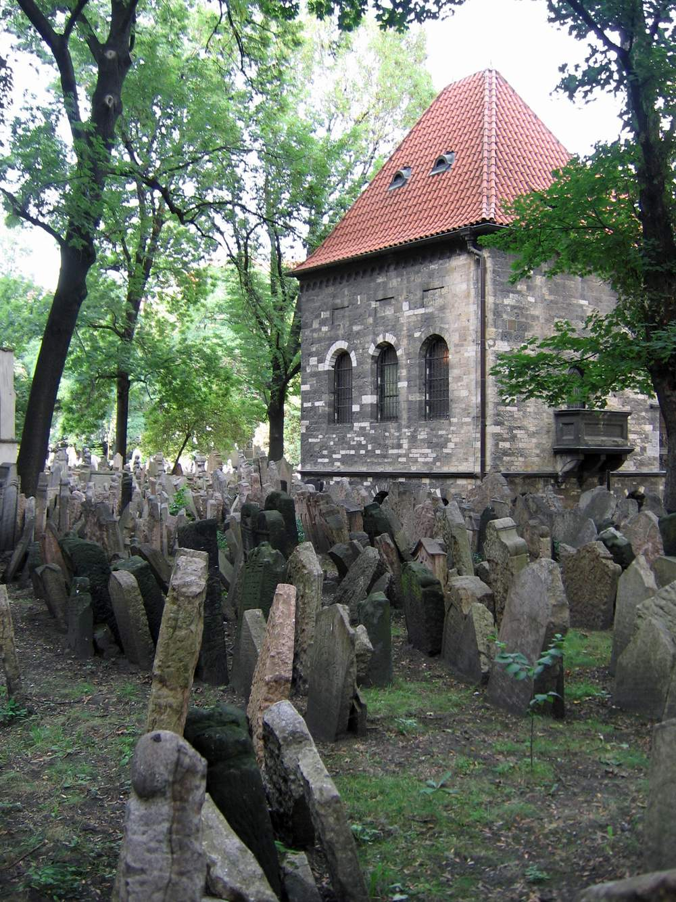

Every place tells a story.
Mapping synagogues, cemeteries, and heritage sites across 121 countries. Many are forgotten. We map them all.
As communities change and physical traces disappear, memory needs a map.
What the Atlas includes
Preserving What Might Disappear
Jewish Atlas is a global record of heritage — weaving fragments from old archives and local knowledge into one reliable digital record.
More than a database, this is a bridge. By making history visible, we connect people to their roots and help local communities reclaim their stories.
Built for travelers, educators, and families seeking to connect.

How people use it
- Explore Jewish heritage by city, country, or region
- Plan visits and discover nearby sites before traveling
- Help preserve memory by uploading forgotten or undocumented places
Why This Matters
Preservation is about continuity. By keeping Jewish presence visible and its history accessible, we ensure that these stories remain part of the global landscape, even when physical sites are vulnerable.
Dedicate a Brick
Create a permanent tribute to a person, family, or community. Your support keeps the Atlas free for everyone.
Know a site we missed? Upload a Site → Submissions reviewed before publishing